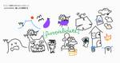

弁護士ドットコム株式会社 Creators’ blog
https://creators.bengo4.com/
弁護士ドットコムがエンジニア・デザイナーのサービス開発事例やデザイン活動を発信する公式ブログです。
フィード

protovalidate 活用事例とその効果
弁護士ドットコム株式会社 Creators’ blog
この記事は弁護士ドットコム Advent Calendar 2024の 9 日目の記事です。 クラウドサインのエンジニアの榎戸です。今年は新規事業をやったりで刺激的な 1 年でした。 そんな新規事業ですが、頭を使わないお絵描きをしてみんなでアイスブレイクする時間が癒しでした。この記事のアイキャッチはそのお絵描きから生まれたものです。「protovalidate の記事書くからお絵描きイラスト募集してます」と声をかけたらアイスブレイクで描いていただきました。左上の山を登る人から、バリデーションチェックの大変さを感じさせられますね（？） 今回は、その新規事業で採用した protovalidate …
8分前
年末なのでコードの大掃除をしよう 2
2
弁護士ドットコム株式会社 Creators’ blog
この記事は弁護士ドットコム Advent Calendar 2024の 8 日目の記事です。 クラウドサイン事業本部でエンジニアをやっている田邉です。 みなさんの js、ts プロジェクトには、なぜ export しているのかわからないコードや、なんのためにインストールしているのかわからないモジュールはありませんか？ それらが不要だとしたらこの年末に大掃除するチャンスです！ ※ 本記事の内容は既存コードに対する大幅な変更が発生する可能性があります。タイトルには反しますが、年末に実施する場合は十分に注意して実行してください。 私の関わっている事業のプロジェクトでは Next.js を利用している…
1日前
アクセシブルなドロップダウンメニューの構成 1
弁護士ドットコム株式会社 Creators’ blog
この記事は、弁護士ドットコム Advent Calendar 2024 の 2 日目の記事です。 こんにちは、弁護士ドットコムでクラウドサインというサービスのフロントエンドを実装している @RINYU_DRVO と申します。車とギターが大好きです。 昨年の Advent Calender は Go html/templateで書くHTMLメールのハマりどころと対処法 を投稿しました。 今年のテーマは「ドロップダウンメニュー」「アクセシビリティ」です。 この記事で伝えたいこと 背景 改修対象 構成の全体像 解説 role 属性 menu menuitem none aria 属性 aria-la…
7日前

2024年技術発信活動の振り返り
弁護士ドットコム株式会社 Creators’ blog
この記事は弁護士ドットコム Advent Calendar 2024 1日目の記事です！ みなさん、こんにちは！2024年12月突入ということもでアドベントカレンダーも突入しました！ 早速ですが、弁護士ドットコムの技術広報を担っております sakutaro(x@saku_238)から、2024年の技術発信活動を振り返りいたします。 技術カンファレンスの協賛・登壇 2024年も、たくさんの技術カンファレンスへ協賛する機会をいただきました。登壇させていただいたものもあれば、ロゴスポンサーとして名を連ねる形での協賛もありました。それぞれの場で、最新技術や現場の課題について知見を共有し合うことで、新た…
8日前
サマーインターンシップ：2024年メンター生 編
弁護士ドットコム株式会社 Creators’ blog
はじめに 25年新卒内定者アルバイトの千木良です。現在は東京国際工科専門職大学4年生で、2025年4月に弁護士ドットコムに入社予定です。 これは、昨年2023年から始まったサマーインターンシップについてまとめた記事になります。 私は、昨年はインターン生として参加し、今年はインターンシップを運営する側として参加しました。 インターン生時代に体験したブログはこちらにまとめています。 creators.bengo4.com この記事では、メンター生としての感想と運営としての感想を書きます。 どちらのインターンシップも貴重な経験だったので、２つの視点から弁護士ドットコムのインターンシップについて知って…
11日前
サマーインターンシップ体験：2023年インターン生編
弁護士ドットコム株式会社 Creators’ blog
はじめに 25年新卒内定者アルバイトをしていた千木良です。現在は東京国際工科専門職大学4年生で、2025年4月に弁護士ドットコムに入社予定です。 これは、昨年2023年サマーインターンシップについてまとめた記事になります。 昨年はインターン生として参加し、今年はインターンシップを運営する側として参加しました。この記事では、2023年に参加したインターン生としての感想を書きます。 インターンシップの概要 今年のインターンシップのカリキュラムは以下を行いました。 Webシステムの開発 現役エンジニアによるキャリアの話 エンジニア勉強会 懇親会 開催期間は１週間になっており基本的にはWebアプリケー…
13日前
イベント開催レポート：「出張！俺の電子契約」〜クラウドサインをアクセシビリティチェック〜
弁護士ドットコム株式会社 Creators’ blog
2024年9月11日(水) SmartHRさんと開催した弁護士ドットコム×SmartHR「出張！俺の電子契約」〜クラウドサインのアクセシビリティチェック〜」のイベントレポートです。
1ヶ月前
ゼロダウンタイムで Amazon EC2 で稼働している nginx を AWS Fargate に移行した
弁護士ドットコム株式会社 Creators’ blog
こんにちは。弁護士ドットコム クラウドサイン事業本部で SRE をしています、大内と申します。 クラウドサイン事業本部の SRE ではサービスの可用性、信頼性の向上や開発の高速化、省力化を目指した開発を日々行っています。 クラウドサインは 2024 年 10 月で 10 年目のサービスとなりました。 裏ではさまざまなアプリケーション（定期実行バッチ、常駐バッチ、内部 API サーバーなど）が稼働し、相互に連携してサービスを提供しているのですが、中には非常に古くから稼働しているものも存在します。 今回お話する nginx もその 1 つです。 クラウドサインの裏で稼働するアプリケーションのほとん…
2ヶ月前
弁護士ドットコムはVue Fes Japan 2024にスポンサー＆登壇します！
弁護士ドットコム株式会社 Creators’ blog
弁護士ドットコム株式会社 技術広報のsakutaroです！ 2024年10月19日（土）に開催される「Vue Fes Japan 2024」に、弁護士ドットコムはプラチナスポンサーとして協賛します。 今回のブログでは、セッション内容やスポンサーブースをご紹介します！ Vue Fes Japan 2024 とは Vue.js 日本最大級のカンファレンス「Vue Fes Japan」が、2024年も開催されます！ 2018年にスタートしたこのイベントは、Vue.js コミュニティが一緒に学び、楽しみ、そして成長できる場として誕生しました。 前回の2023年は、5年ぶりのオフライン開催で600名近く…
2ヶ月前
MockServiceWorker（MSW） を使った高速開発のための運用事例
弁護士ドットコム株式会社 Creators’ blog
クラウドサイン事業本部の田邉(𝕏@s_tanabe_)です。 フロントエンドの開発に携わっているみなさんは、バックエンドや BFF(Backends For Frontends) の開発を待たずにフロントエンドの開発に取りかかりたいと考えたことはありませんか？ これが実現できると フロントエンドでの不確定性を早いうちに潰しておける バックエンドと並行してフロントの開発を進めることができるようになる など開発の高速化につながるメリットを享受することができます。 そしてこれを実現することができるようになるツールこそが Mock Service Worker です。 以降では Mock Servic…
2ヶ月前
AWS COST CUT FIGHT 回答を作ってみました
弁護士ドットコム株式会社 Creators’ blog
概要 10月5日(土)に開催されたYAPC::Hakodate 2024 で「AWS COST CUT FIGHT」という株式会社DELTA様のイベントがありました*1。 その中で弊社SREが2000$越えのコスト削減を達成しました。 むずかった😇月間$ 2,150のAWSコスト削減に成功しました！あなたはいくら削減できる！？コスト削減クイズにチャレンジ！presented by 株式会社DELTA https://t.co/CQyjt4khLM #yapcjapan— nakamura (@__namakura) 2024年10月5日 と思ったらついに2000ドルの壁を超えた猛者が！#yap…
2ヶ月前
ボタンをaタグで作るな高校校歌
弁護士ドットコム株式会社 Creators’ blog
まずはこちらをお聞きください。 技術的解説: ボタンを a 要素で作るな a 要素は URL などへのリンクをつくるためのもので、button 要素はなんらかの処理を起動するボタンをつくるためのものです。 配置されるものがリンクなら a 要素で実装し、ボタンなら button 要素で実装すべきです。 これに違反すると、意図しない動作や、アクセシビリティ上の問題が発生します。 これは MDN でも詳しく説明されています。 onclick イベント -- \<a>: アンカー要素 - HTML: ハイパーテキストマークアップ言語 | MDN よく見られる誤った使い方として、擬似的なボタンを作成する…
2ヶ月前
GraphRAG を使ってみる
弁護士ドットコム株式会社 Creators’ blog
こんにちは。弁護士ドットコム株式会社リーガルブレイン開発室の井出です。 リーガルブレイン開発室では生成 AI などの技術を利用して企業法務や弁護士の課題解決のためのサービスを開発しております。 今回は弊社で研究を進めている GraphRAG がどういったものか、環境を構築し、実際にサンプルデータを処理するまでの手順をご紹介します。 GraphRAG を研究することになった背景 グラフについて Microsoft GraphRAG Microsoft GraphRAG 構築準備 検証した動作環境 Python インストール gcc インストール Rust インストール Azure OpenAI …
2ヶ月前
Vue 3.5 の新機能・改善点まとめ
弁護士ドットコム株式会社 Creators’ blog
クラウドサインのフロントエンドエンジニアの辻@t0daaayです。 2024 年 9 月 1 日に Vue 3.5 のリリースが発表されました。 https://blog.vuejs.org/posts/vue-3-5 このブログでは、このリリースノートを読みリリースされた内容を実際に動かしてみたり、さらに調査した内容についてまとめました。 Reactive Props Destructure の安定化 https://vuejs.org/guide/extras/reactivity-transform.html#reactive-props-destructure props が分割代入の…
3ヶ月前
クラウドネイティブ時代のプロキシTraefikのDocker入門
弁護士ドットコム株式会社 Creators’ blog
こんにちは。税理士ドットコム事業部の @komtaki です。 先日、税理士ドットコムの local 環境に「クラウドネイティブ時代のリバースプロキシ」Traefikを導入しました。プロキシサーバーの候補として最初に思いついたのは nginx でしたが、最終的には、設定ファイル不要で compose.yml だけで完結する Traefik に決めました。 そこで本記事では、Docker を前提としたコンテナのラベルでの設定方法など、導入の過程で調べた Traefik を使うために必要な情報をまとめています。 なお Traefik にはロードバランサーの機能もあるのですが、ここではプロキシの機能…
3ヶ月前
新卒が必読書「Team Geek」から学んだ、チームづくりのためのガイド
弁護士ドットコム株式会社 Creators’ blog
こんにちは2025年内定者の千木良です。現在は東京国際工科専門職大学4年生で、２０２５年４月に弁護士ドットコムに入社予定です。 ２本目の記事では、チーム開発では欠かせない思考を学べる「Team Geek」について大切だと思った点をまとめました。 学生と社会人の大きな違いは、チーム開発を行うかどうかだと思います。本書を読むと、チーム開発を円滑に進めるための知識が身につくためぜひご覧ください！ この本が必読書である必要性 Team Geekとは こんな人におすすめ Team Geekの重要ポイント チーム開発における重要な考え方 素晴らしいチーム文化を作る 文化とは 文化を気にかける必要性 外発的…
3ヶ月前
新卒が必読書「リーダブルコード」から学んだ、読みやすいコードを書くための基本ルール
弁護士ドットコム株式会社 Creators’ blog
こんにちは、2025年内定者の千木良です。現在は東京国際工科専門職大学4年生で、２０２５年４月に弁護士ドットコムに入社予定です。 この記事では、弁護士ドットコムの必読書である「リーダブルコード」を読んだため、学生エンジニア視点で重要だと思った点をまとめた記事になります。 ボリュームがある記事になってしまいましたが、この記事を読むだけでエンジニアとして一回り成長できる内容になりましたのでぜひ最後まで見てもらいたいです！ この本が必読書である必要性 リーダブルコードとは？ こんな人におすすめ 本書の重要ポイント 名前の命名を意識しよう 名前に情報を埋め込む 誤解されない名前にする コメントする際は…
3ヶ月前
なぜボタンは button 要素で作るべきなのか、div 要素をボタンにすることを通して考える
弁護士ドットコム株式会社 Creators’ blog
この記事を読むとわかること なぜボタンを button 要素で作るべきなのか、その理由 どーーーーーしてもボタンを別の要素で作らなければいけないとき、何をすればいいか 答え button 要素を使ったときに得られる標準動作を捨ててまで得られるメリットがないからです。 HTML の標準に従って、適切な要素を用いて開発することが重要です。 そもそも HTML (HyperText Markup Language) は、ドキュメントの構造や意味を印付けして表すためのマークアップ言語です。 ボタンにはボタンであるという印、つまり button 要素を用いるのが理にかなっています。 button 要素の…
3ヶ月前
mablers.jp登壇レポート_APIテストのリアルをお届け！弁護士ドットコムでのmablの活用方法
弁護士ドットコム株式会社 Creators’ blog
こんにちは。クラウドサイン事業本部 QAチームの田中です。 先日、自動テストツール「mabl」のユーザーイベント「mablers.jp」にて、APIテストをテーマに登壇させていただく機会がありました。 今回は、スライドでお伝えしきれなかった部分を中心に振り返りながら、登壇レポートを書かせていただきます。 登壇資料 アーカイブ動画 発表内容 なぜAPIテストを導入したか 何故mabl で取り組んだのか 具体的な取り組み 効果 課題と今後の展望 参加者の反応 まとめ ※イベントの詳細情報はこちらをご覧ください。 登壇資料 資料はSpeakerDeck に公開しております。 アーカイブ動画 この登壇…
4ヶ月前
クラウドサインのCREチームにジョインして1か月が経過しました
弁護士ドットコム株式会社 Creators’ blog
こんにちは、藤谷(𝕏@fujitanien05)です。 2024/7/1より弁護士ドットコム株式会社クラウドサイン事業本部 Reliability Engineering部 CREチームに転職して、1か月が経過しました。 何事も最初の新鮮な気持ちって大事なので、この新鮮な気持ちを残してみます。 クラウドサインのCustomer Reliability Engineeringについて CREは「Customer Reliability Engineering」（顧客信頼性エンジニアリング）の略で、顧客の信頼性を担保することを目的としてGoogleによって提唱されました。 クラウドサインのCREチ…
4ヶ月前
ふりかえりの場を作るために DPA(Design the Partnership Alliance)をやってみた
弁護士ドットコム株式会社 Creators’ blog
クラウドサインのフロントエンドエンジニア ツノです。 みなさんは Design the Partnership Alliance（略して DPA）についてご存じですか？ DPA とは、スクラム開発でのふりかえりの場を作るために行うワークショップの 1 つです。この記事では、チームの形成期に DPA を実践して得られた経験を共有します。 DPA に取り組んだきっかけ DPA とは 準備 実践 DPA DPA をやってみたふりかえり まとめ DPA に取り組んだきっかけ 現在所属しているスクラムチームのメンバーと「アジャイルなチームをつくる ふりかえりガイドブック（翔泳社）」の輪読会をしていました…
4ヶ月前
クラウドサインのデータ分析基盤を運用していくための体制改善 - データマネジメント勘所＃4 イベントレポート
弁護士ドットコム株式会社 Creators’ blog
こんにちは。クラウドサイン事業本部 SREチームの高橋です。 普段はSREとして勤務する傍らデータエンジニアとしても働いています。 今回、2024年5月14日（火）に開催された「TECH PLAY主催：primeNumber | 弁護士ドットコム｜キャディ｜コミューン共催イベント」にて第1セッションで登壇させていただきました。 techplay.jp セッションでは データ分析基盤の体制改善 について発表しまして、その内容をブログでも共有します。 セッション情報 セッションタイトル セッション資料 セッションの内容 データ分析基盤の運用課題 体制改善の3つのアクション 改善ACTION 1: …
6ヶ月前
Go HTML Template のエスケープの挙動に気をつけよう
弁護士ドットコム株式会社 Creators’ blog
TL; DR Go HTML Template では、渡した文字列がデフォルトでエスケープされますが、Typed Strings を渡すとエスケープされません そこにユーザーが自由に指定できる値を設定すると、XSS 脆弱性につながる恐れがあります Revel の関数の中には、引数に渡した値を、内容はそのまま Typed Strings にして返すものがあります すべての条件が揃うケースは稀ですが、気をつけましょう Go の HTML テンプレート html/template は Go の標準ライブラリです。 他の言語にも存在するような、HTML へのテンプレート展開を実現してくれます。 以下の…
7ヶ月前
クラウドサインに入社してから 1 カ月たった
弁護士ドットコム株式会社 Creators’ blog
2024 年 3 月から入社したツノ(𝕏@2nofa11)です。 この記事では、クラウドサインにエンジニアとして入社 1 カ月たった私が、どんな 1 カ月を過ごしたかと入社して感じたことを書きました。 補足すると「クラウドサイン」は弁護士ドットコムのサービスのひとつなので「クラウドサインに入社」という表現はただしくありません。 （私は入社前までクラウドサインという会社だと思っていましたが、入社して弁護士ドットコムという会社だと知りました）。 「これからクラウドサインの開発に関わるぞ」という意欲を込めて、本記事ではあえて「クラウドサインに入社」という表現を使っています。 対象読者としてはクラウド…
7ヶ月前
入社４ヶ月でBigQueryの課金額を減らすために考えたこと
弁護士ドットコム株式会社 Creators’ blog
データ分析基盤室の otobe（𝕏@UC_DBengineer） です。 事業規模が拡大し、大規模なデータの管理が必要になるにつれて、SnowFlake や BigQuery のようなハイパワーな DWH サービスでデータを加工するケースは多いです。 その際、想定外な高額請求が起こる原因のひとつに、クエリが最適化されておらずスキャン量が増大しているケースがあります。 そのため、クエリのスキャン量を監視・管理することが課金額を減らすうえで有効な手段となることがあります。 本記事では、前半で BigQuery で課金されるスキャン量を監視・管理するまでのプロセスを振り返り、 後半で BigQuer…
8ヶ月前
イベント開催レポート：PdM Meetup〜ビジョンを成功に導く効果的なPdM組織とは？
弁護士ドットコム株式会社 Creators’ blog
こんにちは。クラウドサインでプロダクトマネージャー（PdM）を担当している中井です。 2024年もあっという間に4月。東京では桜の見頃が過ぎ、桜吹雪が綺麗ですね。 そんな中、2024年4月10日、株式会社ラクスと弁護士ドットコム株式会社と合同で「【弁護士ドットコム × ラクス】PdM Meetup〜ビジョンを成功に導く効果的なPdM組織とは？」をオフラインイベントとして開催しました。 今回の記事ではイベントの雰囲気とともに発表内容の一部をご紹介します。 イベント概要 rakus.connpass.com 本イベントでは、BtoB SaaSサービスを展開する2社（弁護士ドットコム株式会社、株式会…
8ヶ月前
OOC2024にスポンサー＆ブース出展します
弁護士ドットコム株式会社 Creators’ blog
こんにちは。技術広報を担当しているsakutaro(@saku_238)です！ 弁護士ドットコムは 2024年3月24日(日) にお茶の水女子大学で開催予定の「Object-Oriented Conference 2024（略称：OOC）」にゴールドスポンサーとして協賛します！ OOCが4年ぶりに開催されることになり、この貴重な機会を活かし、当社では技術コミュニティのさらなる発展に貢献したいと考えています。そこで、スポンサーとしての参加を決めました。 OOCとは （公式サイトより引用） Object-Oriented Conference はオブジェクト指向をテーマに、アイデアを共有し、議論を…
9ヶ月前
推しが退所する悲しみを忘れるために仕事がんばったら、裁量労働制にかかる法改正対応（一部）ができました。
弁護士ドットコム株式会社 Creators’ blog
弁護士ドットコムで働く人事部 労務チームの後沢です。 弊社には様々な部活があるのですが、私は某アイドル事務所を応援する部活に入り、大好きなアイドルグループ Kis-My-Ft2 を応援することに生きがいを見出しております。 しかし、昨年、事件が起きました。 生きがいであるアイドルグループKis-My-Ft2のメンバー北山宏光くんが2023年8月31日にグループを脱退し、事務所も退所することになったのです。 www.oricon.co.jp 仕事の憂さは、推し活で晴らし、日々生きながらえているのですが、この事態だけはどうにも受け止めることができません。 忘れるために熱心に仕事をしていたら、推し活…
9ヶ月前
今年も弁コムはPHPerKaigi2024にスポンサーするぞ！
弁護士ドットコム株式会社 Creators’ blog
こんにちは。sakutaroです！ 今年もPHPerKaigiの季節がやってきましたね！ 弊社も昨年に引き続き、「PHPerKaigi 2024」にプラチナスポンサーとして協賛します！！ 2024年3月7日(木)〜3月9日(土)、オフラインでは中野セントラルパークカンファレンス、オンラインではニコニコ生放送での開催となる予定です！！！ PHPerKaigiとは （公式サイトより引用） PHPerKaigi（ペチパーカイギ）は、PHPer、つまり、現在PHPを使用している方、過去にPHPを使用していた方、これからPHPを使いたいと思っている方、そしてPHPが大好きな方たちが、技術的なノウハウとP…
9ヶ月前
社内システムで生成AIを活用するコツは業務理解と事前準備
弁護士ドットコム株式会社 Creators’ blog
こんにちは。税理士ドットコム事業部の @komtaki です。 ChatGPT が 2022 年 11 月 30 日に出て一年が経ちました。みなさんも生成 AI を本番サービスで活用できてますか。 弁護士ドットコム株式会社でも実運用の壁を乗り越えて、実際にビジネスを変革するため本番サービスへの活用が進んでいます。「Developers Summit 2024」で市橋がプレゼンしていますので、よろしければご覧ください。 GenAI in Production～生成AIに君がみた光と、僕がみた希望～ / 20240215_devsumi2024 - Speaker Deck その事例を踏まえて、社…
9ヶ月前